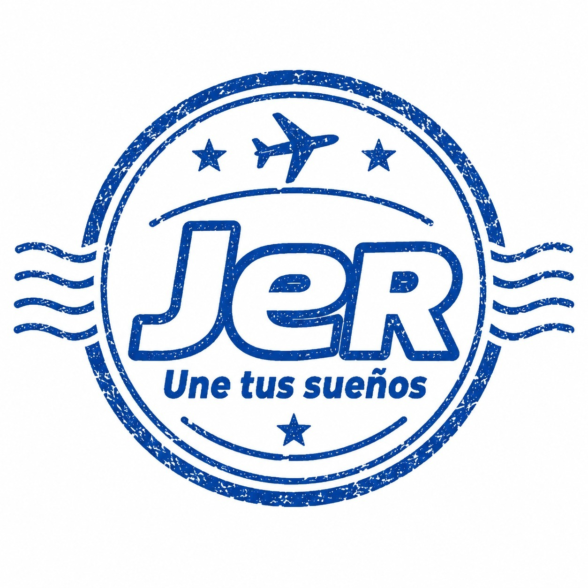

VISTA DE DEMOSTRACIÓN · DATOS FICTICIOS Salir del demo
PASAPORTE MUNDO ARCADETU HISTORIA DE APRENDIZAJE ✈
Tu pasaporte
de aprendizaje
Consulta tu progreso, revisa los cursos que has completado
y las insignias que has obtenido en Mundo Arcade.
Ingresa tu número de cédula para ver tu historial de aprendizaje.
Tu próxima aventura comienza con lo que aprendes.
Cursos realizados
Cada aprendizaje cuenta
Consulta tu cédula para descubrir los cursos que has completado.
Mi PasaporteID DE APRENDIZAJE: —
BIENVENIDO A TU AVENTURA
Tu historia está por descubrir
Consulta tu número de cédula
✦ Jugador Arcade“El conocimiento nos mueve.”

Mi progreso
Explorar mi ruta →◆ Cursos
—✦ Insignias
obtenidas
—▥ Nivel
ExploradorUn nuevo comienzo
Insignias obtenidas
TU ESFUERZO TAMBIÉN DEJA HUELLA ★Aquí brillarán tus logros.
Cada curso abre un nuevo horizonte.
TU HISTORIA DE APRENDIZAJECURSOS APROBADOS
CADA APRENDIZAJE CUENTA
Cursos realizados
RECONOCIMIENTOS QUE DEJAN HUELLAJER · UNE TUS SUEÑOS
TU ESFUERZO BRILLA
Insignias obtenidas
Cada insignia guarda una parte de tu aventura.
Mismas personas. Más horizontes. ✦ Pasaporte Mundo Arcade Ver demostración